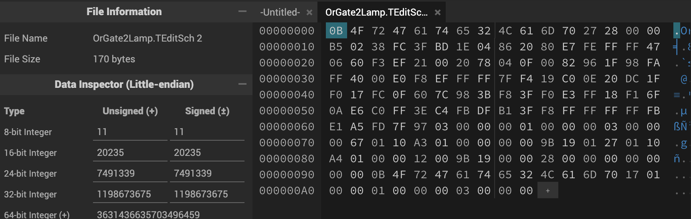

After seeing someone build a computer in Terraria and seeing someone build a neural network in Minecraft, I was inspired to build a neural network in Terraria.
Terraria is an action-adventure sandbox game that allows players to build and explore their own worlds. One of the key features of Terraria is the ability to wire blocks together to create complex systems.
I'm going to keep it pretty simple. There are four different color wires: Red, Blue, Green, and Yellow.
There are also logic gates in Terraria: AND, NAND, OR, NOR, XOR, XNOR
This was a pretty simple step. I downloaded the MNIST dataset and trained a simple neural network using PyTorch.
Code here:
import torch
import torch.nn as nn
import torch.optim as optim
import torchvision
import torchvision.transforms as transforms
# Define a simple neural network
class NeuralNetwork(nn.Module):
def __init__(self):
super(NeuralNetwork, self).__init__()
self.fc1 = nn.Linear(28 * 28, 128)
self.fc2 = nn.Linear(128, 64)
self.fc3 = nn.Linear(64, 10)
def forward(self, x):
x = x.view(-1, 28 * 28)
x = torch.relu(self.fc1(x))
x = torch.relu(self.fc2(x))
x = self.fc3(x)
return x
# Load the MNIST dataset
transform = transforms.Compose([transforms.ToTensor(), transforms.Normalize((0.5,), (0.5,))])
trainset = torchvision.datasets.MNIST(root='./data', train=True, download=True, transform=transform)
trainloader = torch.utils.data.DataLoader(trainset, batch_size=64, shuffle=True)
# Define the loss function and optimizer
criterion = nn.CrossEntropyLoss()
optimizer = optim.SGD(model.parameters(), lr=0.1)
# Train the neural network
for epoch in range(5): # Number of epochs
for i, (inputs, labels) in enumerate(trainloader):
optimizer.zero_grad()
outputs = model(inputs)
loss = criterion(outputs, labels)
loss.backward()
optimizer.step()
print("Training complete")
Using wires and display boxes, we can configure a display in Terraria to allow the user to draw a number.

Display boxes are turned when two signals from the same source trigger the box. We wire it up so that each pixel in the 28x28 display is triggered by a switch and the buffer is saved to an AND gate so that it can be used later for the weights.
A problem I ran into was that Terraria doesn't support fractional weights, so I had to multiply the weights by 10 and truncate any extra decimal points. This allowed me to keep the weights at an integer value.
Code here:
After doing this, we can see that the accuracy of the neural network is 89.5%, which is pretty good
The next step now is to multiply the weights and sum them up for each neuron then sum the results to get the final output.
Multiplying the weights and summing them up would take a lot of computational power and I don't think Terraria could even handle that. So I had to come up with a different solution.
Since the display is either 1 or 0, we can sum the weights of the inputs that are 1 and just ignore it if it's 0.
I had to go back to retrain the neural network on input images where each pixel is binary.
Code here:
Now we can see that the accuracy of the neural network is 99.2%!
Addition and Subtraction was pretty simple. Using binary values, I had made a full adder circuit.
How a full adder works is that it takes two inputs and a carry input and adds them up to give an output and a carry output.

Stacking them up X amount of times would give us an X bit adder.
Now we had everything ready to start inputting the weights in binary values using logic gates and wiring them to a full adder.
I use TEdit which is an open-source Terraria Map Editor, it makes modifying the world easier.
The problem is, we have 784 weights with 10 neurons, manually inputting them is quite tedious even with mods that can copy paste blocks.
I had to come up with a solution to somehow programmatically create a schematic file so I can just paste it in the world.
My idea was to reverse engineer Terraria schematic files so I can just spin up a script to modify it.
Looking through the source code and examining the schematic file through a hex editor, I hada good idea of how they were made.
The way the schematic files work is:
private void SaveV2(BinaryWriter bw, uint version)
{
bw.Write(Name);
bw.Write(version);
bw.Write(Size.X);
bw.Write(Size.Y);
var frames = WorldConfiguration.SaveConfiguration.GetData((int)version).GetFrames();
World.SaveTiles(Tiles, (int)version, Size.X, Size.Y, bw, frames);
World.SaveChests(Chests, bw, (int)version);
World.SaveSigns(Signs, bw, (int)version);
bw.Write(Name);
bw.Write(WorldConfiguration.CompatibleVersion);
bw.Write(Size.X);
bw.Write(Size.Y);
}
We can see that it writes the name of the file, the version, the dimensions of the schematic, the tiles, the file name, the world configuration, and then finally the dimensions of the schematic.
All we had to do now was to find the hexadecimal that corresponds to all logic gates, lamps, and wires.
We save a schematic of a simple Or gate and 2 lamps on it and examine it:
On my to-do list is to make a python library so people can easily create schematic files programmatically. For now, we will just do it the good old manual way.
We end up with these values:
Lamp = 27 01 10 A3 01 00 00 00 00 9B 19
AND Gate = 27 01 10 A4 01 00 00 00 00 9B 19
Empty Space = 05 01 10 9B 19
Great, now we can cook up some python code to modify the schematic files.
We go back to my code with the NN, turn all weights to binary format, feed that array to the python script to programmatically place the AND gates and lamps.
Now we have all of our weights stored in a schematic that we can just paste into the world.
Implementation in Terraria: